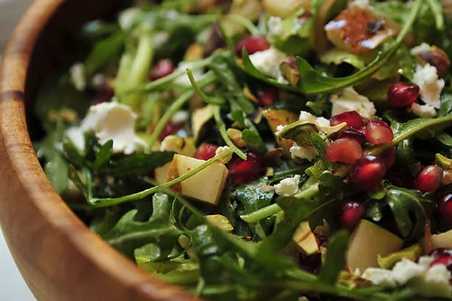

Arugula Salad

A vibrant arugula salad that's as nutritious as it is delicious. Fresh arugula serves as the base for a medley of colorful cherry tomatoes, crisp cucumber and tangy red onion. Topped with crumbled feta, crunchy nuts, and the pop of pomegranate seeds, this salad is a true celebration of flavors and textures.
Ingredients
- Fresh arugula
- Cherry tomatoes, halved
- Cucumber, sliced
- Red onion, thinly sliced
- Feta cheese, crumbled
- Pomegranate seeds
- Walnuts, pecans or almonds, chopped
- Balsalmic vinagrette dressing
Steps
- Wash and dry the arugula thoroughly.
- In a large bowl, combine the arugula, cherry tomatoes, cucumber, avocado, and red onion.
- Sprinkle crumbled feta cheese, pomegranate seeds, and chopped nuts over the salad.
- Drizzle balsamic vinaigrette dressing over the salad and toss gently to combine.
- Serve the arugula salad as a refreshing and nutrient-dense option for a light meal or side dish.
Back to Recipes